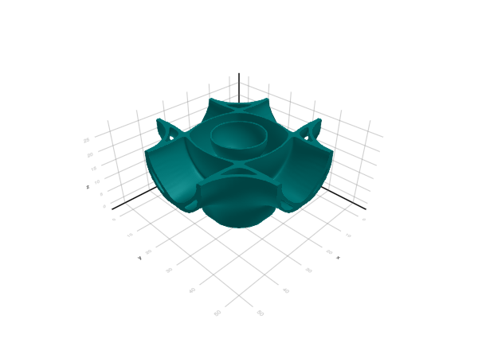

BZ visualization
In addition to visualizing band diagrams, which focus on high-symmetry paths of the BZ, it can be useful to identify contributions from a full 3d view of the BZ. The examples below show how to do so using AutoBZ
Spectral function
using StaticArrays
using OffsetArrays
using AutoBZ
H = OffsetArray(zeros(SMatrix{3,3,Float64,9}, 3,3,3), -1:1, -1:1, -1:1)
# intraband hoppings
t = -0.25 # nearest-neighbor hopping
H[ 1, 0, 0] = H[-1, 0, 0] = [ 0; 0; 0;; 0; t; 0;; 0; 0; t]
H[ 0, 1, 0] = H[ 0,-1, 0] = [ t; 0; 0;; 0; 0; 0;; 0; 0; t]
H[ 0, 0, 1] = H[ 0, 0,-1] = [ t; 0; 0;; 0; t; 0;; 0; 0; 0]
# interband hoppings
t′ = 0.05 # next-nearest neighbor hopping
H[ 0, 1, 1] = H[ 0,-1,-1] = [ 0; 0; 0;; 0; 0;t′;; 0;t′; 0]
H[ 0, 1,-1] = H[ 0,-1, 1] = -[ 0; 0; 0;; 0; 0;t′;; 0;t′; 0]
H[ 1, 0, 1] = H[-1, 0,-1] = [ 0; 0;t′;; 0; 0; 0;;t′; 0; 0]
H[ 1, 0,-1] = H[-1, 0, 1] = -[ 0; 0;t′;; 0; 0; 0;;t′; 0; 0]
H[ 1, 1, 0] = H[-1,-1, 0] = [ 0;t′; 0;;t′; 0; 0;; 0; 0; 0]
H[ 1,-1, 0] = H[-1, 1, 0] = -[ 0;t′; 0;;t′; 0; 0;; 0; 0; 0]
H = HamiltonianInterp(AutoBZ.Freq2RadSeries(FourierSeries(H, period=2pi)))
using LinearAlgebra
ω = 0.0
μ = -0.6
η = 0.05 # broadening
Σ = EtaSelfEnergy(η)
bz = load_bz(FBZ(3), Diagonal(collect(AutoBZ.period(H))))
solver = DOSSolver(Σ, H, bz, PTR(npt=50); ω, μ)
f = solver.f
ksolver = init(f.prob, f.alg; f.kwargs...)
kpts = range(-0.5, 0.5; length=50)
kvals = map(Iterators.product(kpts, kpts, kpts[1:26])) do k
h_k = f.s(k)
f.update!(ksolver, k, h_k, solver.p)
sol = solve!(ksolver)
f.postsolve(sol, k, h_k, solver.p)
end
kvals_density = kvals ./ maximum(kvals)
using GLMakie
v = volume(kvals_density; algorithm=:iso, isovalue=1.0, isorange=0.9,
colormap=cgrad([:teal, :teal],10))Transport function
β = 10.0
μ = -0.6
bz = load_bz(FBZ(3), Diagonal(collect(AutoBZ.period(H))))
hv = GradientVelocityInterp(H, bz.A; gauge=Hamiltonian())
solver = TransportFunctionSolver(hv, bz, PTR(npt=50); β, μ)
f = solver.f
kpts = range(-0.5, 0.5; length=50)
kvals = map(Iterators.product(kpts, kpts, kpts[1:26])) do k
h_k = f.s(k)
f.f(k, h_k, solver.p)
end
kvals_density = -1 .* real.(tr.(kvals)) ./ maximum(norm, kvals)
v = volume(kvals_density; algorithm=:iso, isovalue=0.5, isorange=0.05, colormap=cgrad([:teal, :teal],10))
Conductivity
To plot the conductivity contributions at each k-point, a frequency integral needs to be evaluated and AutoBZ.jl does not currently provide an API to evaluate that. Since this would require internals, we do not provide an example and instead request that you open a Github issue if you would like this feature.